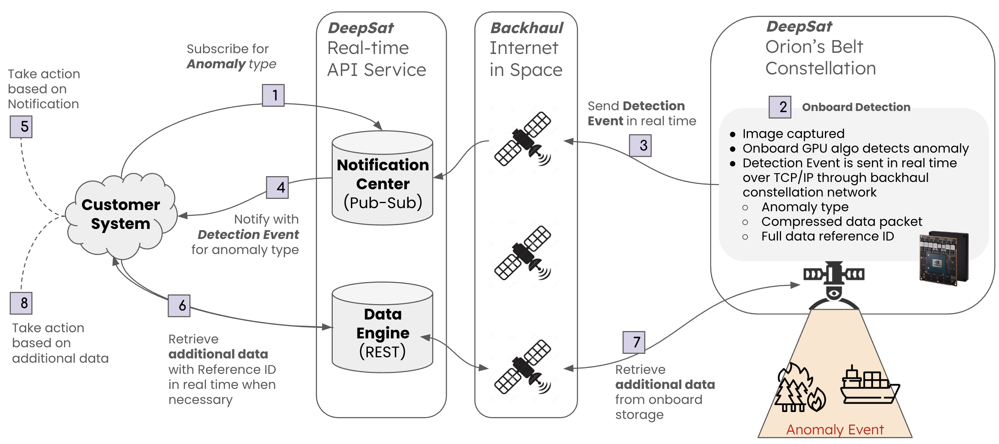

April 2026 · Distribution A, Proprietary, Not for Public Release
Seeking
$30M PY26.1 STRATFI Matching Funding Letter by 29 May 2026, plus an NGA Letter of Support for Luno B on-ramp and AGAIM model evaluation. Eligible STRATFI sponsors include SSC Space Sensing, SSC BMC3, USSOCOM SOF AT&L, Army, Navy, Agencies, and C5ISR. STRATFI matching extends our active DAF D2P2 (FA864925P0298, $1.25M) into the Q4 2027 SpaceX precursor.
Space-ISR Infrastructure for NGA's Object-Based GEOINT Mission
A VLEO constellation with onboard AI delivering object detections, not pixels. Built to feed Maven, Luno, and the Joint Mission Management Center directly.
Transformational Capability
A VLEO constellation that emits object-detection events from orbit. AGAIM-accreditable models, AIS-correlation engine, polarimetric dark-vessel detection. Object-based production runs at the sensor.
NGA Outcome
Native event-stream feed for OBP and the Maven Smart System; commercial complement to Luno detection task orders; JMMC-tippable VLEO sensor for pop-up GEOINT requirements.
Precursor Launch
Q4 2027 on SpaceX, with reserved capacity for NGA-defined object types, AOIs, and AGAIM-accreditable detection models. Software-defined missions update on orbit.
Active Government Engagements
AFRL (D2P2 #FA864925P0298), MDA (SHIELD IDIQ Prime), USSOCOM (TE 26-2), NASA Goddard (LOI), JIATF-South. STTR with USC ISI (SF25D-T1201).
BLUF — Bottom Line Up Front
DeepSat is creating a New Strategic Layer of space infrastructure. A VLEO constellation with onboard AI publishes object-detection events, not pixels, in a contract Maven and the Luno-B vendor ecosystem already consume. Contract-mature today: active DAF D2P2 (FA864925P0298, $1.25M), MDA SHIELD IDIQ Prime, Q4 2027 SpaceX precursor scheduled, CMMC-2 demonstrated.
Aligned with NGA's stated priorities. Object-Based Production at the source feeds the Maven Smart System and Luno-B analytics partners; polarimetric VLEO with on-orbit AIS-correlation mirrors the Asia-Pacific maritime intelligence work NGA already funds; JMMC-tippable VLEO sensing closes the pop-up tasking loop in seconds.
The ask: $30M PY26.1 STRATFI matching funding letter by 29 May 2026, plus an NGA Letter of Support for Luno B on-ramp and AGAIM model evaluation. STRATFI extends our active D2P2 into the Q4 2027 precursor and reserves capacity for NGA-defined object classes, AOIs, and models.
Space ISR and Orchestration Platform
In VLEO, delivering rapid and resilient space intelligence directly to the warfighter.
DeepSat Infrastructure
+
AI
DeepSat Platform
Edge IntelligenceSensor FusionOperations
GEOINT Analyst
Detection events into Maven; JMMC tasks DeepSat directly
1. DeepSat Is Creating a New Strategic Layer of Space Infrastructure
DeepSat is building Orion's Belt, a Very Low Earth Orbit (VLEO) ISR constellation with onboard AI and optical inter-satellite backhaul. The platform delivers persistent object-detection events on a commercial-pace acquisition path, contract-mature today, COTS-scalable for production, and aligned with NGA's AI Strategy and Object-Based Production direction.
VLEO Promise
Persistent presence below the LEO debris belt and below most counterspace threats, the newest frontier of space.
2× Closer to Earth
Smaller sensors for sub-meter resolution; ~4× higher SNR from low look angles for harder-to-see objects.
Scalable through COTS
Best-in-class commercial bus, optics, GPU, OISL, propulsion. Production economics, not bespoke.
Self-Cleaning Orbit
Orbit recovers in weeks, not years. Resilient to debris and contested operations.
2. The Operational Reality NGA's GEOINT Mission Faces
Three persistent realities drive NGA's GEOINT mission, each one a signal that already shapes how the agency invests in commercial vendors:
Volume mismatch between pixels and analyst capacity. Commercial imagery production exceeds analyst exploitation throughput. Maven Smart System has scaled to 20,000+ users on a $1.3B Palantir IDIQ ceiling, but analysts need events, not pixels. Object-Based Production at the source, not in a downstream pipeline, is the only way to keep up.
Custody for moving GEOINT. Vessels, vehicles, and pop-up activity move between national-system passes. NGA already funds Asia-Pacific maritime intelligence under Luno B for AIS-spoof and dark-vessel hunting; high-revisit VLEO with on-orbit AI scales that mission cost-effectively.
JMMC needs a tippable layer at commercial pace. The Joint Mission Management Center is at IOC with 20 USSF Guardians embedded. Its value depends on sensors that can be re-tasked in minutes against pop-up requirements. VLEO + OISL + MCP-compatible tasking is the architecture for that layer.
The May 2025 USSF-NGA roles MOU clarifies the seam: USSF runs the sensors, NGA runs the analysis. DeepSat is built to make that handoff event-native.
Scenarios & Platform Response
Proprietary · Not for Public Release
3. Three Scenarios, One Platform
Three scenarios shaped to NGA's stated priorities: Maven-fed object-based production, JMMC-tippable collection, and Luno-aligned commercial GEOINT. Each scenario engages the same three layers of the platform: the VLEO sensor, the on-orbit intelligence and decision layer, and the publish path into Maven, JMMC, and Luno-B analytics partners.
Scenario 1Maven-Fed Dark-Vessel Pattern of Life in INDOPACOM
An adversary uses AIS spoofing and STS transfers to evade sanctions in the South China Sea. DeepSat satellites maintain persistent pattern-of-life across contested waters, run multi-modal fusion (optical, SWIR, polarimetry, AIS) on orbit, and emit detection events, AIS-mismatch, dark-vessel rendezvous, suspicious loitering, directly into the Maven Smart System for analyst exploitation. The flow mirrors NGA's existing Asia-Pacific maritime intelligence task orders under Luno B; DeepSat is the VLEO sensor that feeds them at speed.
Intelligence & decision layer: on-orbit object-based production (~200 ms inference), polarimetric glare-defeat for dark hulls, AIS-correlation engine with spoof detection, AGAIM-accreditable detection models, agentic publish to Maven and Luno-B analytics partners.
Scenario 2JMMC-Tippable VLEO Sensor for Pop-Up GEOINT
The Joint Mission Management Center receives a pop-up GEOINT requirement, an unexpected port visit, an exercise stand-up, a humanitarian event. JMMC tasks DeepSat through the MCP-compatible tasking interface; the constellation re-tasks in seconds; on-orbit models adapt to the new object class via federated update; events publish back to JMMC and the requesting CCMD over OISL. No collection request waits on a station pass.
Intelligence & decision layer: agentic / MCP-compatible tasking, on-orbit model adaptation, OISL relay of events to ground without ground-pass latency, chain of custody tying the request to the published events, AGAIM-accreditable model lineage.
Scenario 3OBP-Native Event Stream for Luno-B Analytics
A Luno-B analytics partner needs an event-stream feed for terrain-change, infrastructure-buildup, or non-Earth imaging detection. DeepSat publishes detection events as a Pub-Sub stream to the analytics partner, who composes them with their own value-add models and delivers finished GEOINT to NGA. The data model is OBP-native, the model lineage is AGAIM-accreditable, and DeepSat never sees the analytics partner's downstream IP. The platform fits the Luno-B vendor ecosystem rather than competing with it.
Intelligence & decision layer: object-based production at the sensor (events, not pixels), Pub-Sub publish to Luno-B vendors, AGAIM-accreditable model registry, federated retraining on shared object classes, IP-clean integration boundary.
What makes all three scenarios possible. A VLEO sensor layer, an on-orbit intelligence and decision layer (multi-modal fusion + object-based production + agentic orchestration), and a publish path that feeds Maven, JMMC, and Luno-B partners as events. The same three extend to OCONUS basemap refresh, contested-AOR change detection, and Tearline open-source GEOINT.
The Constellation
Proprietary · Not for Public Release
4. The Constellation: Detection to Action in Minutes, Not Hours
A detection in orbit becomes a notification on the operator's device before the object leaves the frame.
Onboard AI processing
GPU processes imagery in orbit. Only alerts and compressed data packets downlinked. No raw bulk imagery to ground.
LEO laser relay
Inter-satellite optical links push data to ground through a LEO backhaul mesh. No waiting on a station pass.
Below the aerial layer
Drones and aircraft have limited dwell and lose custody on refuel. VLEO is persistent and cross-cues the returning aerial asset.
Live video & alerts
Real-time detection and alerting to operators over existing C2 channels and TAK-compatible endpoints.
Always connected
TCP/IP end to end across the constellation mesh. Every satellite is both a sensor and a router.
The Service
Proprietary · Not for Public Release
5. The Service: Live Data and Intelligence API
Designed to integrate with complementary sensing systems and external analytical workflows.

1
Customer subscribes to an anomaly type on the Notification Center (e.g. dark-vessel rendezvous, GPS-spoofed track, thermal anomaly over AOI).
2
Onboard GPU runs detection in orbit. A match generates a detection event: anomaly type, compressed packet, full-data reference ID.
3
Event sent in real time over TCP/IP through the LEO backhaul mesh. No waiting on a ground pass.
4
Notification Center publishes the event to every subscribed customer system.
5
Customer system acts on the notification, automatically, agentically, or routed to an operator via existing C2.
6
If deeper context is needed, customer calls the Data Engine REST API with the reference ID.
7
Data Engine retrieves full data, full-resolution frame, adjacent frames, sensor-fusion slices, from onboard storage in real time.
8
Customer takes follow-on action on the enriched data: interdict, cross-cue, alert partner force.
Why this matters for NGA's GEOINT mission. New sensors (polarimetric, RF, SIGINT, hyperspectral, non-Earth imaging) come in through the payload abstraction layer without changing the API. The same Pub-Sub contract that alerts on a dark vessel alerts on an NGA-defined object class, change-detection event, or AGAIM-accreditable signature. Reserved capacity for NGA means reserved object classes, reserved AOIs, reserved compute on the precursor and the production constellation.
Team
Proprietary · Not for Public Release
6. Team
Merging space, AI, and enterprise. Operators who have already shipped mission-critical infrastructure at scale, and advisors who have built the space, defense, and intelligence programs the United States depends on.
Founders
Nerses Ohanyan
Co-founder, CEO
Serial founder. Stanford M.S. Mechanical Engineering. SVP Vineti ($100M+ raised), built chain-of-custody orchestration platform for regulated pharma. Viki (8x exit to Rakuten).
Hayk Martirosyan
Co-founder, CTO
Led Armenia's first satellite (Hayasat-1). Co-founded Bazoomq Space Lab. 15+ years systems engineering at Siemens.
Core Team
Craig Jennings
Platform Architecture
CTO, Vineti. SVP, Salesforce, led quality and engineering for the most advanced enterprise platform. Led Quality at Macromedia and Oracle.
Subbu Viswanathan
Programs and Partnerships
Head of Programs at Vineti, delivered CAR-T cell therapy supply chain. Ran regulated manufacturing at J&J. Brings FDA-grade program rigor to mission-critical space operations.
Eric Bell
Service Design Architect
Led service design for enterprise-scale products at Microsoft and Rakuten. Designed Vineti's regulated chain-of-custody UX. Expert in how operators actually act on intelligence.
Ryan Southwick
VP, IT, Security, Compliance
VP IT and Compliance at Vineti and OpenTable. Built HIPAA/regulated systems at Cord Blood Registry. Demonstrated CMMC-2 to AFRL, the path into classified defense contracts.
Sarkis Karabashian
Government Relations, National Security
Leading government relations and DoW engagement. Ex-Deloitte Federal and NatSec practice. M.S. International Security, Georgetown University.
Grace Hancik
Government Affairs, Appropriations
Former Epirus, counter-UAS directed energy. Defense appropriations expert. Deep House Armed Services and DoW relationships, shapes the budget for space programs.
Moving at the speed of relevance
$2.45M
Total capital
10
Team members
<2 yrs
Since founding
2027
Launch scheduled
$FoundedRaised $1.2M pre-seed
♦RedWire PartneredSatellite bus partner
★Applied AFWERXD2P2 submission
★AFWERX D2P2$1.25M non-dilutive won with AFRL
♦NASA GoddardLetter of Intent for space weather data
■Counter-NarcoticsUndisclosed customer engaged
♦Partners AlignedSatlantis, Kepler, NVIDIA
★MDA SHIELDPrime on $151B program
■Counter-NarcoticsPrimary S&T engagement
⚙CMMC-2Demonstrated to AFRL
■SOCOM ExerciseSecured
⚙AI Detection DemoVessel & cloud detection
■HPSCIPassed to NRO & NGA
■Congressional LobbyistChampioning orbital resilience
♦USC ISI PartnershipSTTR submitted w/ SSC
$Raising CapitalRaising now
Q2 '24
Q4 '24
Q1 '25
Q2 '25
Q3 '25
Q4 '25
Q1 '26
★ Contracts$ Funding♦ Partnerships⚙ Technology■ Government
Partners, Hardware & Capabilities
Proprietary · Not for Public Release
7. Partners, Hardware, and Capabilities
Every layer of the DeepSat platform is delivered with best-in-class commercial companies and government collaborators. MOUs, POs, and joint engineering are in motion. The table below makes the contribution of each partner explicit, the hardware, the spec, and the flight heritage that retires risk for the precursor and the production constellation.
<1 m VNIR + SWIR imaging payload with multiband real-time video.
Kepler
Optical inter-satellite links and real-time data relay mesh.
NVIDIA
IGX Orin 500 GPU for onboard AI/ML inference, ~200 ms detection.
Orbion
Aurora Hall-effect propulsion sized for VLEO drag compensation.
NASA Goddard
Letter of Intent — first-of-kind VLEO atmospheric and space-weather datasets.
USC ISI
STTR Phase I/II partner for adaptive & intelligent space systems (SF25D-T1201).
Hardware and Capabilities Provided
Component
Partner
Capability / Spec
Flight Heritage / TRL
VLEO Satellite Bus
Redwire
Drag-compensating, payload-abstracted bus sized for VLEO duty cycle; integrated power, thermal, and ADCS for sub-meter optics and onboard compute.
Multiple flight programs; ROSA solar arrays; TRL 9 today.
Imaging Payload
Satlantis
iSIM-class <1 m VNIR + SWIR optics with multiband real-time HD video; tasking-on-demand framing.
iSIM-90 flown on multiple ESA / commercial missions; TRL 9.
Optical Inter-Satellite Link
Kepler Communications
OISL terminals aligned with SDA optical comms standards; low-latency mesh backhaul for NGA-bound events without ground-pass latency.
21 satellites on orbit; OISL flight-demonstrated; TRL 9.
Onboard AI Compute
NVIDIA
IGX Orin 500 GPU for on-orbit inference; supports AGAIM-accreditable model updates over OISL; ~200 ms object-detection latency.
Jetson Orin family qualified for spaceflight; TRL 9.
Hall-Effect Propulsion
Orbion
Aurora HET sized for VLEO drag compensation and constellation maintenance.
33-SV DoW production order flying ahead of DeepSat; TRL 8 today, TRL 9 pre-launch.
Polarimetric Imaging
DeepSat IR&D (partner TBD)
Electro-optic film for polarimetric imaging; sea-surface object enhancement, Kelvin wake detection, material and surface discrimination, foundational for dark-vessel / AIS-spoof events into Maven.
TRL 4 today; helicopter test campaign in progress; CubeSat risk-reduction launch planned.
Onboard Software & Decision Layer
DeepSat
Object-based production, multi-modal fusion (optical, SWIR, RF, AIS, polarimetry), agentic publish to Maven / JMMC / Luno-B partners, MCP-compatible tasking, chain of custody, AGAIM-accreditable model registry.
TRL 5 today; TRL 8 by end of D2P2 (AFRL Phase II).
Atmospheric & Space Weather
NASA Goddard
Auxiliary instrumentation for VLEO atmospheric and space-weather datasets unavailable from higher altitudes.
Letter of Intent signed; payload contribution under negotiation.
Adaptive Autonomy R&D
USC ISI
Adaptive and intelligent space-systems autonomy: on-orbit re-tasking, federated model updates, fault tolerance.
STTR SF25D-T1201 submitted; transitions through D2P2 to flight.
Government Engagement Pipeline
Proprietary · Not for Public Release
8. Government Engagement Pipeline
DeepSat's government engagements span active contract, signed LOI, operational experimentation, submitted proposals, and theater alignment. The pipeline below leads with the NGA alignment pathways that are the focus of this paper. Status reflects April 2026.
Active — contract, LOI, or flight hardware in motionIn Progress — submitted or under evaluationTheater Alignment
National Geospatial-Intelligence Agency (NGA)
Targeting Luno B on-ramp, AGAIM evaluation, and an Outpost Valley engagement. Aligned with the May 2025 USSF-NGA roles MOU.
JMMC (USSF Guardians embedded at NGA)
JMMC at IOC with 20 USSF Guardians embedded. DeepSat positioned as a JMMC-tippable VLEO sensor for pop-up GEOINT requirements.
Air Force Research Laboratory (AFRL)
Active D2P2 contract (DAF X25.5 CSO #FA864925P0298, $1.25M). CMMC-2 demonstrated. Government sponsor unlocking TAK SDK.
Missile Defense Agency (MDA)
Prime on MDA SHIELD IDIQ. MDA-sponsored facility clearance pathway.
NASA Goddard Space Flight Center
Signed Letter of Intent — atmospheric / space-weather data products from VLEO overflight regimes unavailable elsewhere.
Space Systems Command (SSC)
STTR 2025.D SF25D-T1201 submission via USC ISI; aligned to TacSRT VLEO carveout (FY26 NDAA $40M) under separate capability paper.
JIATF-South
Counter-narcotics maritime engagement; dark-vessel detection validation in SOUTHCOM AOR.
INDOPACOM
Named priority theater for VLEO maritime domain awareness; mirrors NGA Luno-B AAMOR-aligned task orders.
Technology Readiness & ROM Cost
Proprietary · Not for Public Release
9. Technology Readiness Maturation
Current TRL and path to TRL 7. Maturity is tracked in two categories.
Flight hardware (currently TRL 8). Thruster (Orbion) at TRL 8 today and TRL 9 pre-flight, as a 33-satellite DoW contract flies before ours. Bus (RedWire), Optical Payload (Satlantis), and GPU (NVIDIA) are all TRL 9 today from prior flight heritage.
Payload and intelligence layers (currently TRL 4 - 5). Software Platform at TRL 5 today, TRL 8 by end of D2P2 (AFRL Phase II). Polarimetric payload at TRL 4, advancing through the sensor and payload technology maturation cycle in the ROM section below.
The integrated combined system is TRL 5 today, TRL 8 pre-launch, TRL 9 post-launch.
10. ROM Cost / Schedule
The total ROM for the Q4 2027 precursor mission is $45M, covering the bus, the payload, the launch, and two years of on-orbit operations. The total includes two components:
LaunchPrecursor Build to Launch and Two-Year Operations — $40M
Bus integration, full payload integration, launch on SpaceX (Q4 2027), and two years of on-orbit operations.
Mature the onboard detection, multi-modal fusion, and polarimetric sensing layers through three anchor activities:
Aerial tests of the solution. Airborne characterization of sensors, onboard fusion stack, and operator delivery path.
CubeSat launch of the polarimetric payload. On-orbit characterization of the polarizer ahead of precursor integration.
ISS launch of the full payload. Risk reduction for the precursor payload stack in a representative space environment.
Variables influencing ROM. Sensor selection and optimization; availability of government-furnished assets for aerial characterization under a CRADA; operating in VLEO drives the major fixed costs for the satellite bus and propulsion.
Why This Model Is Right for NGA, Now
Proprietary · Not for Public Release
11. Why This Model Is Right for NGA, Now
Object-Based Production is the data model NGA already has. Maven Smart System, the AI Strategy, and AGAIM all converge on events not pixels. DeepSat is built for OBP from day one, the on-orbit decision layer publishes detections directly into the contract Maven and the Luno-B vendor ecosystem already consume.
Luno B is the open vehicle. 13 vendors, $200M ceiling, 5-year IDIQ, with periodic on-ramps and an active task-order pipeline. DeepSat's event stream is a natural commercial complement and an enabling supply for analytics partners on the IDIQ.
JMMC needs a tippable layer. The Joint Mission Management Center at NGA HQ, with 20 USSF Guardians embedded and operationalizing the May 2025 USSF-NGA roles MOU, depends on sensors that can be re-tasked in minutes. VLEO + OISL is the architecture for that layer.
The Asia-Pacific maritime mission is in motion. Existing Luno-B awards already fund AIS-correlation and dark-vessel intelligence in the Indo-Pacific. DeepSat's polarimetric VLEO + on-orbit AIS-correlation engine is purpose-built to scale that mission, reserved capacity for NGA-defined object classes lowers the cost-per-detection.
Commercial pace. Adversary tactics evolve faster than traditional programs. DeepSat's COTS hardware, software-defined missions, and on-orbit model updates close that gap, AGAIM-accreditable lineage keeps the IC-grade governance.
Path Forward & Contact
Proprietary · Not for Public Release
12. Path Forward
Primary Ask
NGA Letter of Support & On-Ramp
DeepSat is seeking an NGA Letter of Support for three coordinated commitments: (1) Luno B on-ramp evaluation for an event-stream VLEO supplier, (2) AGAIM model evaluation for our object-detection pipeline, and (3) an Outpost Valley engagement placing DeepSat's API in front of NGA Commercial Operations and the Maven program team.
Aligned with the May 2025 USSF-NGA roles MOU: USSF runs the sensors, NGA runs the analysis, DeepSat is built to make that handoff event-native.
Beyond the primary ask, four parallel pathways support the NGA engagement:
Maven / OBP integration pilot. Connect DeepSat's Notification Center API to the Maven Smart System through a Palantir-led integration; validate that the OBP data model flows end-to-end and that AGAIM-accreditable models lineage tracks with the published events.
Luno-B partner integration. Engage with one or more Luno-B vendors (e.g., Vantor, BlackSky, Planet Federal, BlueHalo, Booz Allen) to compose DeepSat events into their value-add GEOINT pipelines. DeepSat fits the ecosystem rather than competing with it.
JMMC tasking demonstration. Demonstrate MCP-compatible tasking from JMMC against a pop-up GEOINT vignette, with on-orbit model adaptation and OISL relay of events back to JMMC and the requesting CCMD in seconds.
Tearline / Source Cooperative partnership. Contribute non-classified detection events and synthetic datasets to NGA Tearline and the Source Cooperative for academic and OSINT value, building public credibility ahead of broader Luno-B inclusion. SBIR/STTR and SpaceWERX STRATFI matching remain available secondary funding lanes.
We need an NGA-defined operational vignette. A scoped pop-up GEOINT vignette under NGA sponsorship is the fastest validation path. We are seeking an NGA-defined task or exercise to demonstrate the VLEO sensor + on-orbit decision layer feeding Maven and JMMC against a real operational requirement.
Agile, in lock-step with NGA's AI Strategy. DeepSat is built to iterate at commercial pace, with AGAIM-accreditable models and a payload abstraction layer that lets new sensors (polarimetric, RF, SIGINT, hyperspectral, non-Earth imaging) integrate without redesigning the bus or AI stack. Models update in orbit and learn as new data comes in. Our agile cycles match NGA's stated speed-to-finished-GEOINT objective: fast integration, fast validation, fast iteration, with reserved capacity on the Q4 2027 precursor for NGA-shaped missions.
13. Summary
DeepSat proposes NGA as an early-stage influence on a VLEO space-ISR platform under contract, scheduled for Q4 2027, and built to feed Maven, JMMC, and the Luno-B vendor ecosystem as events. That means NGA shapes reserved capacity, object classes, AOIs, AGAIM-accreditable models, decision layer, before the stack is locked. DeepSat delivers Asia-Pacific dark-vessel pattern-of-life, JMMC-tippable VLEO sensing, and OBP-native event streams, on a publish API that fits the GEOINT enterprise NGA already operates.
Appendix: Polarimetry
Proprietary · Not for Public Release
Appendix
Polarimetry: detecting vessels that hide
Electro-optic films enable polarimetric imaging, detecting material and surface differences invisible to normal cameras. Vessels hiding from conventional surveillance, through wake dispersal, radar-absorbing coatings, or low-contrast paint, become visible. DeepSat's polarimetric payload is being developed with Patqer as the electro-optic film and polarimetric-optics partner.
Capabilities
Sea-surface object enhancement via Stokes vectors
Submarine wake detection (Kelvin wake patterns)
Material and surface discrimination
Active R&D with Patqer; helicopter experiments underway
Polarimetry is integrated via DeepSat's payload abstraction layer, a new sensor does not change the AI stack or the API contract. The same Pub-Sub subscription that alerts on a vessel alerts on a polarimetric signature, ingested by Maven as an event under the same OBP contract.
The Vision
Input
Satellite with electro-optic polarization filter captures polarized light reflected off ocean surface.
↓
Processing
Compute polarization parameters (Stokes I, Q, U; DoLP; AoP) to separate reflected vs. refracted light.
↓
Output
Wake patterns, surface anomalies, and material signatures invisible in normal imagery.
Standard optical imagery, Submarine Kelvin WakePolarimetric enhancement: hidden vessels revealed
Why polarimetry matters for NGA. Adversary vessels designed to defeat conventional optical and radar surveillance, low-freeboard hulls, wake-suppressing designs, coatings tuned to confuse SAR, leave polarimetric signatures. Polarimetric detection events feed directly into Maven and Luno-B AAMOR-aligned task orders, an additional sensor modality for NGA's Asia-Pacific maritime intelligence mission. The on-orbit decision layer publishes polarimetric events alongside optical, SWIR, and AIS events under the same OBP contract.